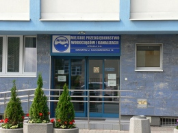

O Firmie
Miejskie Przedsiębiorstwo Wodociągów i Kanalizacji powstało w 1934 r. Od 1994 r. do 2003 r. działało w strukturze Rzeszowskiej Gospodarki Komunalnej, Spółki z o. o. jako oddział sporządzający odrębne bilanse.
MPWiK Sp. z o. o. powstała 01.01.2004 r. w wyniku podziału Rzeszowskiej Gospodarki Komunalnej Sp. z o. o. w Rzeszowie przez wydzielenie i przeniesienie majątku Oddziału MPWiK na spółkę nowo zawiązaną.
MPWiK jest samodzielną spółką prawa handlowego, w której 100% udziałów posiada Gmina Miasto Rzeszów. Prezydent Miasta pełni funkcję Zgromadzenia Wspólników.
MPWiK Sp. z o.o. nie posiada oddziałów sporządzających odrębne bilanse.
Naszą misją jest dostarczanie dobrej, zdrowej wody każdego dnia i oczyszczanie ścieków do ostatniej kropli.
Świadcząc usługi na najwyższym poziomie współtworzymy przyjazne środowisko.
Jesteśmy po to, by służyć naszym Klientom.
Wdrażamy innowacyjne rozwiązania.
Jesteśmy aktywnym partnerem dla lokalnych społeczności.
Odnosimy sukcesy dzięki naszym pracownikom.
Woda jest dla Ciebie, ścieki oddaj nam.
Obszar działania MPWiK obejmuje nie tylko teren samego miasta Rzeszowa lecz także niektóre miejscowości sąsiednich gmin.
Podstawa prawna powołania i funkcjonowania spółki:
- Ustawa z dnia 15.09.2000 r. Kodeks spółek handlowych (Dz. U. Nr 94 poz. 1037 z późn. zmianami)
- Ustawa z dnia 7.06.2002 r. o zbiorowym zaopatrzeniu w wodę i zbiorowym odprowadzaniu ścieków (Dz.U. Nr. 72, poz. 747) i przepisy wykonawcze do tej ustawy
- Akt Założycielski Spółki z o.o. sporządzony w dniu 06.12.2004 r. w Kancelarii Notarialnej w Rzeszowie ul. Jagiellońska 9, notariusz Alicja Mąkosz (Rep. A nr 8694/2003)
- Uchwała Rady Miasta nr XI/119/2003 z dnia 17 lipca 2003 r.
- KRS nr 0000185541